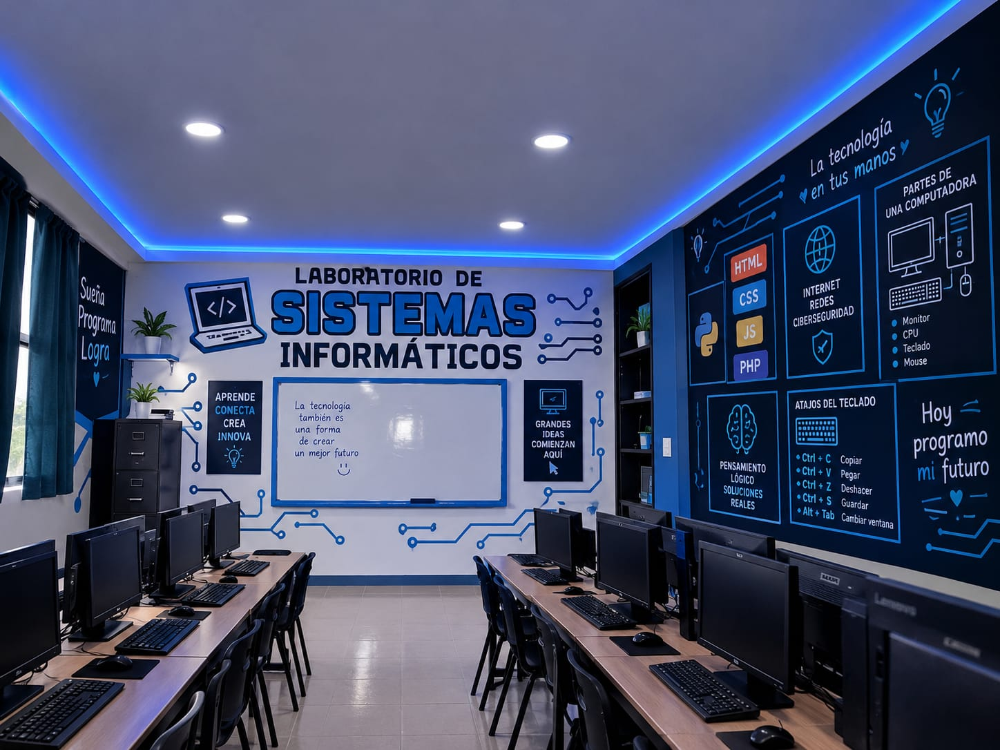

NOSOTROS Y GALERÍA - PADRE LUIS VARIARA
Ir a la página principal
Ir a Horarios y Cursos
Ir a Inscripciones
Historia del Padre Luis Variara
El Padre Luis Variara fue un sacerdote y misionero salesiano reconocido por su entrega generosa, su espíritu alegre y su vocación educativa. Su ejemplo inspira a nuestra unidad educativa en San Pedro, Santa Cruz.
- Compromiso con la educación de la juventud.
- Formación en valores humanos y cristianos.
- Trabajo conjunto entre estudiantes, profesores y padres de familia.
Foto del Curso

Enlaces Útiles
Ministerio de Educación de Bolivia